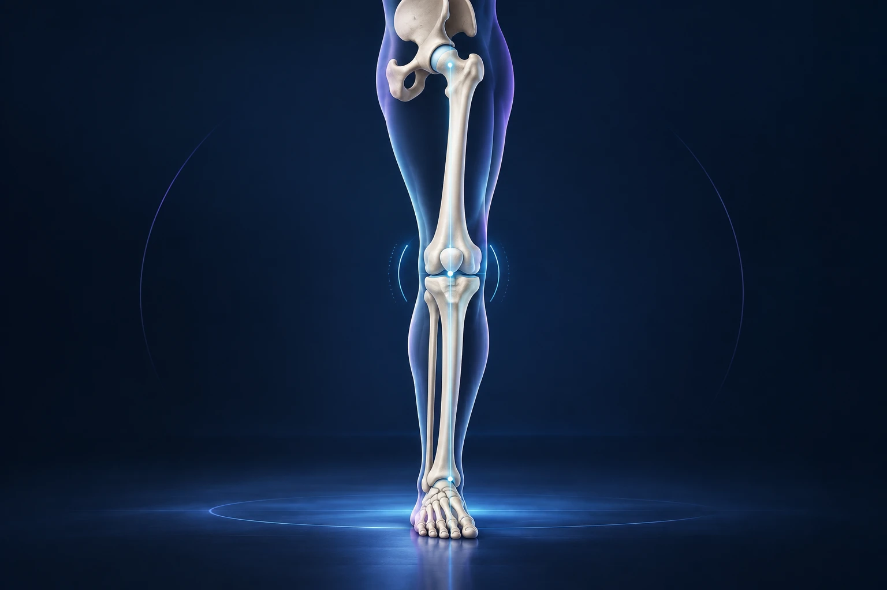

Pourquoi proposer une ostéotomie du genou plutôt qu’une prothèse ?
Publié le

Dans certaines situations, une douleur du genou est liée à une arthrose localisée associée à un mauvais alignement de la jambe. Une ostéotomie peut alors être discutée pour modifier la répartition des charges tout en conservant l’articulation. Cette intervention ne convient pas à tous les genoux et ne garantit pas d’éviter définitivement une prothèse.
Qu’est-ce qu’une ostéotomie ?
Une ostéotomie consiste à réaliser une coupe osseuse contrôlée, puis à modifier l’orientation de l’os avant de le stabiliser. Autour du genou, le geste peut concerner le tibia, le fémur ou, dans certaines situations, les deux. Le niveau de correction dépend de l’origine du défaut d’alignement.
On peut comparer son principe à la correction de l’aplomb d’un support qui charge excessivement un seul côté. L’objectif est de redistribuer les contraintes vers une zone articulaire mieux préservée. Le geste ne remplace pas les surfaces par un implant articulaire et ne fait pas disparaître automatiquement les lésions déjà présentes. Royal Orthopaedic Hospital, principe des ostéotomies du genou.
Le terme peut surprendre, parce qu’il évoque une intervention sur un os alors que la douleur est articulaire. C’est justement le lien entre l’axe du membre et les charges exercées sur le genou qui explique cette stratégie.
Dans quelles situations peut-elle être envisagée ?
Une indication classique concerne une arthrose surtout située dans un compartiment du genou, avec un alignement qui surcharge cette zone. Le chirurgien analyse aussi l’état des autres compartiments, la mobilité, les ligaments et les éventuelles lésions méniscales ou cartilagineuses.
Une activité physique importante peut entrer dans la discussion, mais il n’existe pas une règle simple fondée uniquement sur l’âge. Le choix se construit sur le fonctionnement du genou, le projet du patient et les possibilités de récupération. Certaines ostéotomies accompagnent par ailleurs un traitement ligamentaire ou cartilagineux. Northern Care Alliance, ostéotomies périarticulaires du genou.
Une douleur diffuse, une raideur importante ou une atteinte étendue de l’articulation peuvent conduire à envisager une autre solution. « Conserver son genou » est un objectif intéressant lorsqu’il correspond à une indication cohérente, pas une obligation à poursuivre dans toutes les circonstances.
Quels examens permettent de préparer la décision ?
L’examen précise la localisation de la douleur, la stabilité et la mobilité. Des radiographies en charge permettent d’étudier le genou et l’alignement global du membre. Des clichés couvrant une grande partie de la jambe peuvent être nécessaires pour planifier la correction.
Selon la question posée, d’autres examens peuvent compléter le bilan. La planification doit déterminer où se situe la déformation et quelle correction est recherchée. Ce travail ne se résume pas à rendre les jambes visuellement plus droites.
Pour la consultation, décrivez les activités devenues difficiles et les traitements déjà essayés. Précisez votre travail, votre sport et les contraintes de votre logement. Une intervention appropriée sur le plan anatomique doit aussi s’intégrer dans un parcours de récupération réaliste.
Quelles alternatives faut-il discuter ?
Avant une chirurgie, des mesures comme la rééducation, l’adaptation des activités, les traitements de la douleur ou certaines orthèses peuvent être proposées. Leur efficacité se juge sur votre fonction et vos symptômes. Une douleur persistante conduit à refaire le point, sans imposer automatiquement une opération.
Selon l’étendue de l’arthrose et l’état du genou, les options chirurgicales peuvent inclure une prothèse partielle ou totale. Demandez pourquoi l’ostéotomie paraît plus pertinente dans votre situation, et ce qu’une autre option apporterait ou modifierait dans votre récupération.
Les informations du Dr François Lozach sur la chirurgie du genou présentent les différentes familles d’interventions. Leur comparaison a du sens lorsqu’elle part du même problème clinique, pas lorsqu’elle oppose des techniques en dehors de leurs indications.
Comment se déroule l’intervention ?
La correction planifiée est réalisée par une coupe osseuse, avec ouverture ou fermeture d’un espace selon la technique. Une plaque et des vis maintiennent habituellement la nouvelle position pendant la consolidation. D’autres gestes peuvent être associés si le bilan les justifie.
Les risques comprennent notamment l’infection, la phlébite, la raideur, les lésions nerveuses ou vasculaires, le retard de consolidation et une correction insuffisante ou excessive. Le matériel peut parfois devenir gênant. Ces risques doivent être expliqués en fonction du geste proposé et de votre état de santé. University Hospitals of Leicester, information sur l’ostéotomie tibiale.
Demandez si un retrait du matériel pourrait être discuté ultérieurement. Il ne faut pas confondre la plaque qui maintient la correction et une prothèse destinée à remplacer les surfaces articulaires : leur fonction et leur devenir sont différents.
Pourquoi la récupération demande-t-elle du temps ?
L’os doit consolider dans sa nouvelle position. L’appui, les aides à la marche et la progression des exercices dépendent de la fixation, de la correction et des gestes associés. La diminution de la douleur ne suffit pas à autoriser toutes les contraintes sur un os encore en cours de consolidation.
Le suivi associe l’examen et des contrôles radiographiques. La rééducation accompagne la mobilité et la récupération musculaire. Le travail physique, la conduite et les sports à impacts doivent être abordés séparément. Gateshead Health, récupération après ostéotomie du genou.
Prévoyez les déplacements et l’aide nécessaire avant l’opération. Si vous devez utiliser des béquilles, les escaliers et les trajets pour les soins peuvent devenir les principales difficultés pratiques, même lorsque l’intervention se déroule comme prévu.
Quelle est la bonne question avant de choisir ?
Demandez quel bénéfice fonctionnel est raisonnablement attendu, quelles contraintes vous devrez accepter et comment l’évolution sera évaluée. L’ostéotomie peut différer une prothèse chez certains patients, mais la durée de ce bénéfice ne peut pas être promise individuellement.
Pour discuter d’une douleur liée à l’alignement de votre genou, vous pouvez prendre rendez-vous avec le Dr François Lozach à Sète. Apportez les examens existants afin de construire la décision à partir de votre situation précise.
Ces conseils sont d’ordre général et ne remplacent pas un avis médical personnalisé.